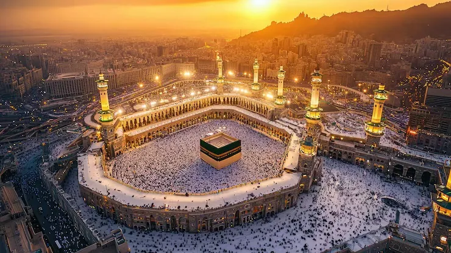
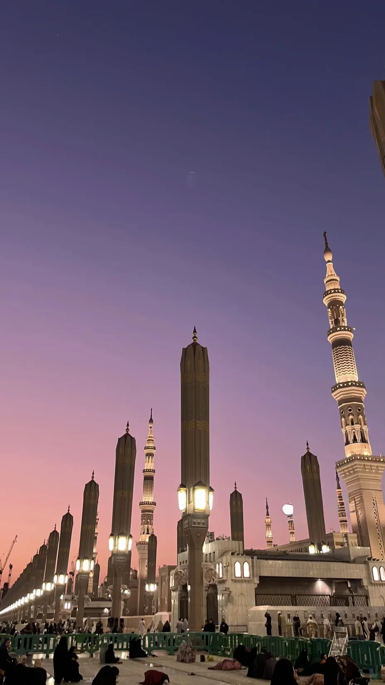
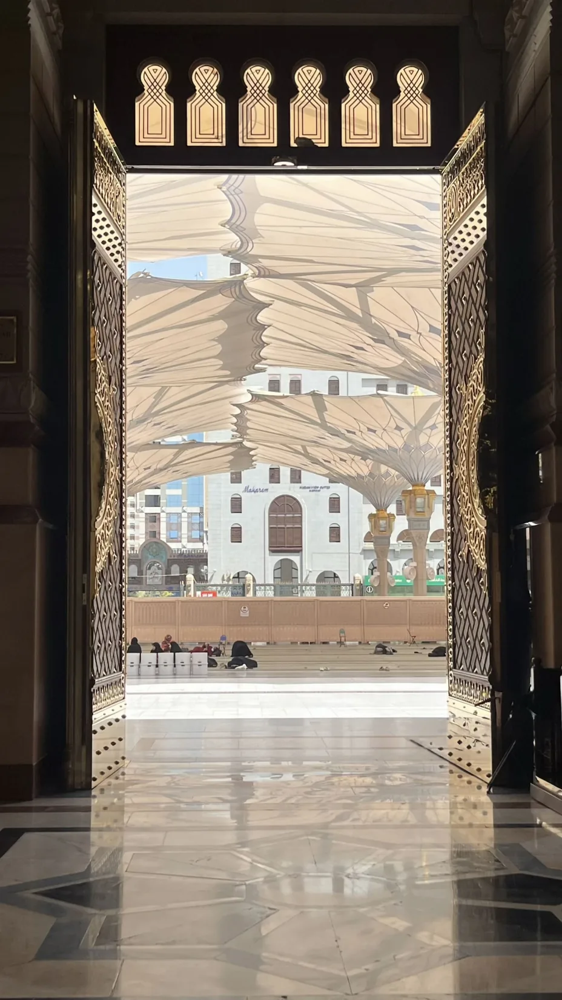

OMRA · HAJJ · RAMADAN
Partez pour un voyage
Partez pour un voyage
spirituel inoubliable
De La Mecque à Médine, vivez une expérience de foi et de découverte. Al Jami Guide vous accompagne à chaque étape de votre voyage.
Voyages spirituels
et culturels
et culturels
Accompagnement
personnalisé
personnalisé
Séjours à La Mecque
et Médine
et Médine
Contact facile
sur WhatsApp
sur WhatsApp
NOS DESTINATIONSDes lieux d'exception
Des lieux d'exception
pour nourrir votre foi
Au cœur des lieux saints, entre recueillement, histoire et rencontres.
NOS CIRCUITS SPIRITUELSNos séjours
Nos séjours
et départs
Des séjours à découvrir, avec les formules Ramadan 2027 déjà annoncées.
Voir les offres et tarifs ↗

Informations
Hajj & voyages culturels
Programmes et disponibilités à demander
Dates à confirmer
Se renseigner ↗RAMADAN 2027 · OFFRES OFFICIELLES COMMUNIQUÉES
Choisissez votre formule
Deux départs, une même invitation au recueillement. Prix et prestations repris des affiches Al Jami Guide.
Départ Europe
Allemagne · France · BelgiqueDates annoncées
Omra Ramadan – Europe
Du 21 février au 11 mars 2027
Prix par personne2 680 €
- Hôtel à Médine : env. 200 m
- Hôtel à La Mecque : env. 500 m
- Un repas annoncé comme inclus
- 5 L d’eau de Zamzam
- Ihram fourni aux hommes
Départ Conakry
Conakry · Médine · DjeddahDates annoncées
Omra Ramadan – Conakry
Du 21 février au 11 mars 2027
Prix par personne38 800 000 GNF
- Hôtel à Médine : env. 200 m
- Hôtel à La Mecque : env. 500 m
- Un repas dans chaque ville annoncé
- 5 L d’eau de Zamzam
- Ihram fourni aux hommes
- Rawda : sous réserve de créneau disponible
VIPVOTRE OMRA, À VOTRE IMAGE
Omra VIP privée et personnalisée
Vivez votre Omra selon vos envies. Al Jami Guide vous propose aussi un voyage VIP privé, conçu sur mesure autour de votre projet, avec le visa Omra inclus. Confiez-nous vos dates, le nombre de voyageurs et vos préférences pour recevoir une offre personnalisée.
- Voyage privé
- Offre sur mesure
- Visa Omra inclus
À savoir : Tarifs, dates, places disponibles, prestations exactes et conditions à reconfirmer auprès de l’agence avant tout paiement. Aucun paiement n’est effectué sur ce site.
VIVRE RAMADAN DANS LES LIEUX SAINTSPlus qu’un voyage,
Plus qu’un voyage,
un moment de foi.
Imaginez les prières à la Grande Mosquée, les instants de partage à l’iftar et la sérénité de Médine. La Omra pendant le Ramadan est une occasion de vous recentrer sur l’essentiel.
Découvrir les offres Ramadan ↗“
Un séjour pour découvrir les rites, comprendre leur signification et vivre chaque étape avec intention.
AL JAMI GUIDEUNE EXPÉRIENCE SPIRITUELLE À DÉCOUVRIR
Qu’est-ce que le Ramadan ?
Le Ramadan est le neuvième mois du calendrier islamique. C’est un temps de jeûne de l’aube au coucher du soleil pour les musulmans concernés, mais aussi de prière, de générosité et de rapprochement spirituel.
Le suhur
Le repas pris avant l’aube, pour commencer la journée de jeûne.
L’iftar
La rupture du jeûne au coucher du soleil, souvent un moment de partage.
Tarawih
Les prières nocturnes qui accompagnent les soirées du Ramadan.
Les dernières nuits
Des moments particulièrement consacrés à l’adoration et à la recherche de Laylat al-Qadr.
RAMADANLe mois du partage et de la spiritualité
COMPRENDRE AVANT DE PARTIR
La Omra et le Hajj
Découvrez les quatre rites de la Omra, puis consultez notre page dédiée pour comprendre aussi chaque grande étape du Hajj.
01
Entrer en état d’ihram
Formuler son intention d’accomplir la Omra au lieu prescrit, puis réciter la talbiya. L’ihram marque l’entrée dans l’état de consécration.
02
Faire le tawaf
Effectuer sept tours autour de la Kaaba, dans le sens inverse des aiguilles d’une montre, en invoquant Allah.
03
Parcourir Safa et Marwa
Réaliser sept trajets entre Safa et Marwa : de Safa à Marwa compte pour un trajet. Le septième se termine à Marwa.
04
Se couper les cheveux
Pour terminer la Omra, les hommes se rasent ou raccourcissent les cheveux ; les femmes en coupent une petite longueur.

AL-MADÎNAMÉDINE, VILLE DE SÉRÉNITÉÀ Médine, chaque instant
Explorer les images de Médine ↗
À Médine, chaque instant
invite au recueillement.
Médine occupe une place majeure dans l’histoire de l’islam. La Mosquée du Prophète ﷺ, ses vastes cours et ses parasols emblématiques composent une étape profondément marquante du voyage.
Découvrir les lieux saintsDes histoires et des repères à comprendre
La RawdaVisite soumise à l’obtention d’un créneau via Nusuk
NOS IMAGES & VIDÉOS
Un aperçu des lieux saints
Les photographies et vidéos que vous nous avez partagées, pour découvrir l’atmosphère de La Mecque et de Médine.
Instants de voyage en vidéo
Deux vidéos envoyées pour ce site. Activez le son selon votre préférence.
Beauté de La Mecque00:33 · Vidéo fournie
Émotions du pèlerinage00:22 · Vidéo fournie
بِسْمِ اللّٰهِ
Chaque image raconte un voyage.
Découvrez des vues des lieux saints et imaginez les moments qui vous attendent.
Préparer mon voyage ↗PRÉPARER SON SÉJOUR
Des informations claires
Découvrez les prestations des offres Ramadan 2027 et notre Omra VIP privée et personnalisée, visa Omra inclus.
Hébergements
Les affiches annoncent des hôtels situés à environ 200 m à Médine et 500 m à La Mecque.
Repas
Des repas sont annoncés selon la formule et le lieu de départ. Vérifiez les détails lors de l’inscription.
Zamzam & ihram
5 litres d’eau de Zamzam et un ihram pour les hommes sont mentionnés dans les offres.
Rawda
Une visite peut être envisagée à Médine selon les créneaux et autorisations disponibles via Nusuk.
QUESTIONS FRÉQUENTESPréparez votre voyage
Préparez votre voyage
en toute sérénité
Quelques réponses pour mieux comprendre votre séjour. Notre équipe reste disponible pour les questions propres à votre réservation.
Poser une question ↗Quelle différence entre la Omra et le Hajj ?
La Omra comprend l’ihram, le tawaf, le sa’i et la coupe des cheveux. Le Hajj se déroule pendant des jours précis et comprend d’autres rites, dont Arafat, Mina et Mouzdalifa.
La visite de la Rawda est-elle garantie ?
Non. Elle dépend d’un créneau et d’un permis disponibles via l’application officielle Nusuk. Une offre ne garantit pas à elle seule l’accès à la Rawda.
Comment connaître le prix exact de mon séjour ?
Sélectionnez votre point de départ et votre type de chambre dans les offres. Le tarif affiché correspond aux supports 2027 ; demandez une confirmation écrite avant de payer.
Quels documents faut-il préparer ?
Les exigences de passeport, visa, permis et santé varient selon votre nationalité et les règles en vigueur. Vérifiez-les auprès de l’agence et des autorités saoudiennes avant le départ.
Puis-je partir à une autre période que Ramadan ?
Vous pouvez demander des informations sur d’autres départs. Aucun tarif ni calendrier supplémentaire n’est annoncé sur cette page tant qu’il n’a pas été confirmé.
PARLONS DE VOTRE PROJETVotre prochain voyage
Votre prochain voyage
commence ici.
Une question sur une formule ? Notre équipe peut vous renseigner par téléphone, WhatsApp ou e-mail.
Contacts Europe+49 159 05387876
Contacts Guinée+224 628 545 578+224 626 101 705
WhatsApp+224 612 650 563Écrire directement
DEMANDE DE RÉSERVATION
Parlez-nous de votre voyage.
Renseignez vos préférences : un message WhatsApp sera préparé. Votre demande ne confirme pas automatiquement une réservation.